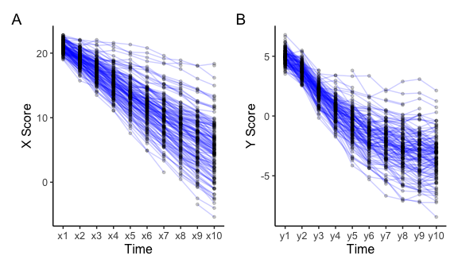

This package offers some helper functions to specify and analyse univariate and bivariate latent change score models (LCSM) using lavaan (Rosseel, 2012). For details about this method see for example McArdle (2009), Ghisletta (2012), Grimm et al. (2012), and Grimm, Ram & Estabrook (2017).
I started working on this project to teach me how latent change score modeling works and how it can be done in R. This package combines the strengths of other R packages like lavaan, broom, and semPlot by generating lavaan syntax that helps these packages work together.
An interactive web application shinychange illustrates some functions of this package. This is work in progress and feedback is very welcome!
Installation
You can install the development version from GitHub with:
# install.packages("devtools") devtools::install_github("milanwiedemann/lcsm")
Overview of the functions
The lcsm package contains the following functions that can be categorised into:
- Functions to generate lavaan syntax for different model specifications:
-
specify_uni_lcsm(): Generate syntax for univariate LCSM -
specify_bi_lcsm(): Generate syntax for bivariate LCSM
-
- Functions to fit models using lavaan:
-
fit_uni_lcsm(): Fit univariate LCSM -
fit_bi_lcsm(): Fit bivariate LCSM
-
- Functions to extract results from models using broom:
-
extract_fit(): Extract fit statistics -
extract_param(): Extract estimated parameters
-
- Simulate data using lavaan:
-
sim_uni_lcsm(): Simulate data by specifying parameters for a univariate LCSM -
sim_bi_lcsm(): Simulate data by specifying parameters for a bivariate LCSM
-
- Helper functions:
-
plot_lcsm(): Visualise LCSM using semPlot -
select_uni_cases(): Select cases for analysis based on available scores on one construct -
select_bi_cases(): Select cases for analysis based on available scores on two construct
-
How to use lcsm
Here are a few examples how to use the lcsm package.
# Load the package library(lcsm)
Visualise data
Longitudinal data can be visualised using the plot_trajectories() function. Here only 30% of the data is visualised using the argument random_sample_frac = 0.3. Only consecutive measures are connected by lines as specified in connect_missing = FALSE.
# Create plot for construct x plot_x <- plot_trajectories(data = data_bi_lcsm, id_var = "id", var_list = c("x1", "x2", "x3", "x4", "x5", "x6", "x7", "x8", "x9", "x10"), xlab = "Time", ylab = "X Score", connect_missing = FALSE, random_sample_frac = 0.3) # Create plot for construct y plot_y <- plot_trajectories(data = data_bi_lcsm, id_var = "id", var_list = c("y1", "y2", "y3", "y4", "y5", "y6", "y7", "y8", "y9", "y10"), xlab = "Time", ylab = "Y Score", connect_missing = FALSE, random_sample_frac = 0.3) # Arrange plots next to each other using patchwork library(patchwork) plot_x + plot_y + plot_annotation(tag_levels = 'A') #> Warning: Removed 18 row(s) containing missing values (geom_path). #> Warning: Removed 85 rows containing missing values (geom_point). #> Warning: Removed 37 row(s) containing missing values (geom_path). #> Warning: Removed 172 rows containing missing values (geom_point).

Fit LCS models
In a first step the functions specify_uni_lcsm() and specify_bi_lcsm() are used to specify the lavaan syntax for a specific LCS model. The functions fit_uni_lcsm() and fit_bi_lcsm() are running specifying the syntax before passing it on to lavaan.
The following table descibes some of the different model specifications that the model arguments can take. More detail can be found in the help files help(fit_uni_lcsm).
Fit univariate LCS models
| Model specification | Description |
|---|---|
| alpha_constant | Constant change factor |
| beta | Proportional change factor |
| phi | Autoregression of change scores |
The example below shows how to specify a generic univariate latent change score model using the function specify_uni_lcsm(). A table of the description of all parameters that can be estimated is shown here.
specify_uni_lcsm(timepoints = 5, var = "x", change_letter = "g", model = list(alpha_constant = TRUE, beta = TRUE, phi = TRUE))
Click here to see the
lavaan syntax specified above.
# Specify latent true scores
lx1 =~ 1 * x1
lx2 =~ 1 * x2
lx3 =~ 1 * x3
lx4 =~ 1 * x4
lx5 =~ 1 * x5
# Specify mean of latent true scores
lx1 ~ gamma_lx1 * 1
lx2 ~ 0 * 1
lx3 ~ 0 * 1
lx4 ~ 0 * 1
lx5 ~ 0 * 1
# Specify variance of latent true scores
lx1 ~~ sigma2_lx1 * lx1
lx2 ~~ 0 * lx2
lx3 ~~ 0 * lx3
lx4 ~~ 0 * lx4
lx5 ~~ 0 * lx5
# Specify intercept of obseved scores
x1 ~ 0 * 1
x2 ~ 0 * 1
x3 ~ 0 * 1
x4 ~ 0 * 1
x5 ~ 0 * 1
# Specify variance of observed scores
x1 ~~ sigma2_ux * x1
x2 ~~ sigma2_ux * x2
x3 ~~ sigma2_ux * x3
x4 ~~ sigma2_ux * x4
x5 ~~ sigma2_ux * x5
# Specify autoregressions of latent variables
lx2 ~ 1 * lx1
lx3 ~ 1 * lx2
lx4 ~ 1 * lx3
lx5 ~ 1 * lx4
# Specify latent change scores
dx2 =~ 1 * lx2
dx3 =~ 1 * lx3
dx4 =~ 1 * lx4
dx5 =~ 1 * lx5
# Specify latent change scores means
dx2 ~ 0 * 1
dx3 ~ 0 * 1
dx4 ~ 0 * 1
dx5 ~ 0 * 1
# Specify latent change scores variances
dx2 ~~ 0 * dx2
dx3 ~~ 0 * dx3
dx4 ~~ 0 * dx4
dx5 ~~ 0 * dx5
# Specify constant change factor
g2 =~ 1 * dx2 + 1 * dx3 + 1 * dx4 + 1 * dx5
# Specify constant change factor mean
g2 ~ alpha_g2 * 1
# Specify constant change factor variance
g2 ~~ sigma2_g2 * g2
# Specify constant change factor covariance with the initial true score
g2 ~~ sigma_g2lx1 * lx1
# Specify proportional change component
dx2 ~ beta_x * lx1
dx3 ~ beta_x * lx2
dx4 ~ beta_x * lx3
dx5 ~ beta_x * lx4
# Specify autoregression of change score
dx3 ~ phi_x * dx2
dx4 ~ phi_x * dx3
dx5 ~ phi_x * dx4 The function fit_uni_lcsm() can be used to fit a univariate LCS model using the sample data set data_uni_lcsm. This functions first writes the lavaan syntax specified in the model argument and passes it on to lavaaan::lavaan().
# Fit univariate latent change score model fit_uni_lcsm(data = data_uni_lcsm, var = c("x1", "x2", "x3", "x4", "x5", "x6", "x7", "x8", "x9", "x10"), model = list(alpha_constant = TRUE, beta = FALSE, phi = TRUE)) #> lavaan 0.6-6 ended normally after 66 iterations #> #> Estimator ML #> Optimization method NLMINB #> Number of free parameters 23 #> Number of equality constraints 16 #> #> Number of observations 500 #> Number of missing patterns 273 #> #> Model Test User Model: #> Standard Robust #> Test Statistic 75.389 74.400 #> Degrees of freedom 58 58 #> P-value (Chi-square) 0.062 0.072 #> Scaling correction factor 1.013 #> Yuan-Bentler correction (Mplus variant)
It is also possible to show the lavaan syntax that was created to fit the model by the function specify_uni_lcsm(). The lavaan syntax includes comments describing some parts of the syntax in more detail. To save the syntax in an object the argument return_lavaan_syntax has to be set to TRUE. This object looks a bit funny, it’s one very long line of text, but can be formatted to look more beautiful and readable using cat(syntax).
# Fit univariate latent change score model syntax <- fit_uni_lcsm(data = data_uni_lcsm, var = c("x1", "x2", "x3", "x4", "x5", "x6", "x7", "x8", "x9", "x10"), model = list(alpha_constant = TRUE, beta = FALSE, phi = TRUE), return_lavaan_syntax = TRUE) # Return lavaan syntax in easy to read format cat(syntax)
Click here to see the lavaan syntax specified in
syntax.
# Specify latent true scores
lx1 =~ 1 * x1
lx2 =~ 1 * x2
lx3 =~ 1 * x3
lx4 =~ 1 * x4
lx5 =~ 1 * x5
lx6 =~ 1 * x6
lx7 =~ 1 * x7
lx8 =~ 1 * x8
lx9 =~ 1 * x9
lx10 =~ 1 * x10
# Specify mean of latent true scores
lx1 ~ gamma_lx1 * 1
lx2 ~ 0 * 1
lx3 ~ 0 * 1
lx4 ~ 0 * 1
lx5 ~ 0 * 1
lx6 ~ 0 * 1
lx7 ~ 0 * 1
lx8 ~ 0 * 1
lx9 ~ 0 * 1
lx10 ~ 0 * 1
# Specify variance of latent true scores
lx1 ~~ sigma2_lx1 * lx1
lx2 ~~ 0 * lx2
lx3 ~~ 0 * lx3
lx4 ~~ 0 * lx4
lx5 ~~ 0 * lx5
lx6 ~~ 0 * lx6
lx7 ~~ 0 * lx7
lx8 ~~ 0 * lx8
lx9 ~~ 0 * lx9
lx10 ~~ 0 * lx10
# Specify intercept of obseved scores
x1 ~ 0 * 1
x2 ~ 0 * 1
x3 ~ 0 * 1
x4 ~ 0 * 1
x5 ~ 0 * 1
x6 ~ 0 * 1
x7 ~ 0 * 1
x8 ~ 0 * 1
x9 ~ 0 * 1
x10 ~ 0 * 1
# Specify variance of observed scores
x1 ~~ sigma2_ux * x1
x2 ~~ sigma2_ux * x2
x3 ~~ sigma2_ux * x3
x4 ~~ sigma2_ux * x4
x5 ~~ sigma2_ux * x5
x6 ~~ sigma2_ux * x6
x7 ~~ sigma2_ux * x7
x8 ~~ sigma2_ux * x8
x9 ~~ sigma2_ux * x9
x10 ~~ sigma2_ux * x10
# Specify autoregressions of latent variables
lx2 ~ 1 * lx1
lx3 ~ 1 * lx2
lx4 ~ 1 * lx3
lx5 ~ 1 * lx4
lx6 ~ 1 * lx5
lx7 ~ 1 * lx6
lx8 ~ 1 * lx7
lx9 ~ 1 * lx8
lx10 ~ 1 * lx9
# Specify latent change scores
dx2 =~ 1 * lx2
dx3 =~ 1 * lx3
dx4 =~ 1 * lx4
dx5 =~ 1 * lx5
dx6 =~ 1 * lx6
dx7 =~ 1 * lx7
dx8 =~ 1 * lx8
dx9 =~ 1 * lx9
dx10 =~ 1 * lx10
# Specify latent change scores means
dx2 ~ 0 * 1
dx3 ~ 0 * 1
dx4 ~ 0 * 1
dx5 ~ 0 * 1
dx6 ~ 0 * 1
dx7 ~ 0 * 1
dx8 ~ 0 * 1
dx9 ~ 0 * 1
dx10 ~ 0 * 1
# Specify latent change scores variances
dx2 ~~ 0 * dx2
dx3 ~~ 0 * dx3
dx4 ~~ 0 * dx4
dx5 ~~ 0 * dx5
dx6 ~~ 0 * dx6
dx7 ~~ 0 * dx7
dx8 ~~ 0 * dx8
dx9 ~~ 0 * dx9
dx10 ~~ 0 * dx10
# Specify constant change factor
g2 =~ 1 * dx2 + 1 * dx3 + 1 * dx4 + 1 * dx5 + 1 * dx6 + 1 * dx7 + 1 * dx8 + 1 * dx9 + 1 * dx10
# Specify constant change factor mean
g2 ~ alpha_g2 * 1
# Specify constant change factor variance
g2 ~~ sigma2_g2 * g2
# Specify constant change factor covariance with the initial true score
g2 ~~ sigma_g2lx1 * lx1
# Specify autoregression of change score
dx3 ~ phi_x * dx2
dx4 ~ phi_x * dx3
dx5 ~ phi_x * dx4
dx6 ~ phi_x * dx5
dx7 ~ phi_x * dx6
dx8 ~ phi_x * dx7
dx9 ~ phi_x * dx8
dx10 ~ phi_x * dx9 Fit bivariate LCS models
The function fit_bi_lcsm() allowes to specify two univariate LCS models using the arguments model_x and model_x. These two constructs can then be connected using the coupling argument. More details can be found in the help files help(fit_bi_lcsm).
| Coupling specification | Description |
|---|---|
| coupling_piecewise | Piecewise coupling parameters |
| coupling_piecewise_num | Changepoint of piecewise coupling parameters |
| delta_con_xy | Change score x (t) determined by true score y (t) |
| delta_con_yx | Change score y (t) determined by true score x (t) |
| delta_lag_xy | Change score x (t) determined by true score y (t-1) |
| delta_lag_yx | Change score y (t) determined by true score x (t-1) |
| xi_con_xy | Change score x (t) determined by change score y (t) |
| xi_con_yx | Change score y (t) determined by change score x (t) |
| xi_lag_xy | Change score x (t) determined by change score y (t-1) |
| xi_lag_yx | Change score y (t) determined by change score x (t-1) |
fit_bi_lcsm(data = data_bi_lcsm, var_x = c("x1", "x2", "x3", "x4", "x5", "x6", "x7", "x8", "x9", "x10"), var_y = c("y1", "y2", "y3", "y4", "y5", "y6", "y7", "y8", "y9", "y10"), model_x = list(alpha_constant = TRUE, beta = TRUE, phi = FALSE), model_y = list(alpha_constant = TRUE, beta = TRUE, phi = TRUE), coupling = list(delta_lag_xy = TRUE, xi_lag_yx = TRUE)) #> lavaan 0.6-6 ended normally after 118 iterations #> #> Estimator ML #> Optimization method NLMINB #> Number of free parameters 87 #> Number of equality constraints 65 #> #> Number of observations 500 #> Number of missing patterns 210 #> #> Model Test User Model: #> Standard Robust #> Test Statistic 191.851 193.021 #> Degrees of freedom 208 208 #> P-value (Chi-square) 0.782 0.764 #> Scaling correction factor 0.994 #> Yuan-Bentler correction (Mplus variant)
Extract fit statistics and parmeters
The main underlying functions to extract parameters and fit statistics come from the broom package: broom::tidy() and broom::glance(). The functions extract_param() and extract_fit() offer some tools that I find helpful when running LCS models in R, for example:
-
extract_param(): only one row per estimated parameter, -
extract_fit(): fit statistics for multiple lavaan objects can be extracted.
A table of the description of all parameters that can be estimated is shown here.
# First create a lavaan object bi_lcsm_01 <- fit_bi_lcsm(data = data_bi_lcsm, var_x = c("x1", "x2", "x3", "x4", "x5", "x6", "x7", "x8", "x9", "x10"), var_y = c("y1", "y2", "y3", "y4", "y5", "y6", "y7", "y8", "y9", "y10"), model_x = list(alpha_constant = TRUE, beta = TRUE, phi = FALSE), model_y = list(alpha_constant = TRUE, beta = TRUE, phi = TRUE), coupling = list(delta_lag_xy = TRUE, xi_lag_yx = TRUE)) # Now extract parameter estimates # Only extract first 7 columns for this example by adding [ , 1:7] param_bi_lcsm_01 <- extract_param(bi_lcsm_01, printp = TRUE)[ , 1:7] # Print table of parameter estimates kable(param_bi_lcsm_01, digits = 3)
| label | estimate | std.error | statistic | p.value | conf.low | conf.high |
|---|---|---|---|---|---|---|
| gamma_lx1 | 21.066 | 0.036 | 588.187 | < .001 | 20.996 | 21.136 |
| sigma2_lx1 | 0.493 | 0.037 | 13.485 | < .001 | 0.421 | 0.564 |
| sigma2_ux | 0.201 | 0.004 | 45.301 | < .001 | 0.192 | 0.210 |
| alpha_g2 | -0.309 | 0.053 | -5.834 | < .001 | -0.413 | -0.205 |
| sigma2_g2 | 0.395 | 0.028 | 14.330 | < .001 | 0.341 | 0.449 |
| sigma_g2lx1 | 0.155 | 0.022 | 7.017 | < .001 | 0.112 | 0.198 |
| beta_x | -0.106 | 0.003 | -30.818 | < .001 | -0.113 | -0.099 |
| gamma_ly1 | 5.025 | 0.029 | 172.786 | < .001 | 4.968 | 5.082 |
| sigma2_ly1 | 0.208 | 0.019 | 10.860 | < .001 | 0.171 | 0.246 |
| sigma2_uy | 0.193 | 0.005 | 39.698 | < .001 | 0.183 | 0.202 |
| alpha_j2 | -0.203 | 0.039 | -5.217 | < .001 | -0.279 | -0.127 |
| sigma2_j2 | 0.093 | 0.008 | 11.766 | < .001 | 0.077 | 0.108 |
| sigma_j2ly1 | 0.017 | 0.008 | 2.156 | .031 | 0.002 | 0.032 |
| beta_y | -0.197 | 0.005 | -39.562 | < .001 | -0.207 | -0.187 |
| phi_y | 0.144 | 0.029 | 4.963 | < .001 | 0.087 | 0.201 |
| sigma_su | 0.009 | 0.003 | 2.581 | .01 | 0.002 | 0.015 |
| sigma_ly1lx1 | 0.185 | 0.021 | 8.905 | < .001 | 0.144 | 0.225 |
| sigma_g2ly1 | 0.072 | 0.016 | 4.437 | < .001 | 0.040 | 0.104 |
| sigma_j2lx1 | 0.093 | 0.012 | 7.916 | < .001 | 0.070 | 0.117 |
| sigma_j2g2 | 0.005 | 0.012 | 0.463 | .643 | -0.018 | 0.029 |
| delta_lag_xy | 0.140 | 0.006 | 23.837 | < .001 | 0.128 | 0.152 |
| xi_lag_yx | 0.360 | 0.037 | 9.634 | < .001 | 0.287 | 0.433 |
Plot simplified path diagrams of LCS models
This function is work in progress and can only plot univariate and bivariate LCS models that were specified with fit_uni_lcsm() or fit_bi_lcsm(). Modified LCS models will probably return errors as the layout matrix that gets created by this plot function only supports the specifications that can be modelled with this package. The input arguments for plotting a simplified path dioagram are:
- the estimated lavaan object
lavaan_object, - the
lavaan_syntaxand , -
lcsmindicating whether the LCS model is “univariate” or “bivariate”
Optional arguments can be used to change the look of the plot, for example:
-
lcsm_colourscan be used to highlight the different parts of the latent change score model- white: observed scores
- green: latent true scores
- blue: latent change scores
- yellow: latent change scores
Further arguments can be passed on to semPlot::semPaths(), for example:
-
what, “path” to show unweighted gray edges, “par” to show parameter estimates as weighted (green/red) edges
-
whatLabels, “label” to show edege names as label or “est” for parameter estimates, “hide” to hide edge labels
Univariate LCS model
# Fit bivariate lcsm and save the results uni_lavaan_results <- fit_uni_lcsm(data = data_uni_lcsm, var = c("x1", "x2", "x3", "x4", "x5"), model = list(alpha_constant = TRUE, beta = TRUE, phi = TRUE) ) #> Warning in lav_data_full(data = data, group = group, cluster = cluster, : lavaan WARNING: some cases are empty and will be ignored: #> 239 # Save the lavaan syntax that is used to create the layout matrix for semPlot uni_lavaan_syntax <- fit_uni_lcsm(data = data_uni_lcsm, var = c("x1", "x2", "x3", "x4", "x5"), model = list(alpha_constant = TRUE, beta = TRUE, phi = TRUE), return_lavaan_syntax = TRUE) # Plot the results plot_lcsm(lavaan_object = uni_lavaan_results, lavaan_syntax = uni_lavaan_syntax, edge.label.cex = .9, lcsm_colours = TRUE, lcsm = "univariate") #> Registered S3 methods overwritten by 'huge': #> method from #> plot.sim BDgraph #> print.sim BDgraph

Bivariate LCS model
# Fit bivariate lcsm and save the results bi_lavaan_results <- fit_bi_lcsm(data = data_bi_lcsm, var_x = c("x1", "x2", "x3", "x4", "x5"), var_y = c("y1", "y2", "y3", "y4", "y5"), model_x = list(alpha_constant = TRUE, beta = TRUE, phi = FALSE), model_y = list(alpha_constant = TRUE, beta = TRUE, phi = TRUE), coupling = list(delta_lag_xy = TRUE, xi_lag_yx = TRUE)) # Save the lavaan syntax that is used to create the layout matrix for semPlot bi_lavaan_syntax <- fit_bi_lcsm(data = data_bi_lcsm, var_x = c("x1", "x2", "x3", "x4", "x5"), var_y = c("y1", "y2", "y3", "y4", "y5"), model_x = list(alpha_constant = TRUE, beta = TRUE, phi = FALSE), model_y = list(alpha_constant = TRUE, beta = TRUE, phi = TRUE), coupling = list(delta_lag_xy = TRUE, xi_lag_yx = TRUE), return_lavaan_syntax = TRUE) # Plot the results plot_lcsm(lavaan_object = bi_lavaan_results, lavaan_syntax = bi_lavaan_syntax, lcsm_colours = TRUE, whatLabels = "hide", lcsm = "bivariate")

Simulate data
The functions sim_uni_lcsm() and sim_bi_lcsm() simulate data based on some some parameters that can be specified. See the tables here for a full list of parameters that can be specified for the data simulation.
# Simulate some data sim_uni_lcsm(timepoints = 5, model = list(alpha_constant = TRUE, beta = FALSE, phi = TRUE), model_param = list(gamma_lx1 = 21, sigma2_lx1 = 1.5, sigma2_ux = 0.2, alpha_j2 = -0.93, sigma2_j2 = 0.1, sigma_j2lx1 = 0.2, phi_x = 0.3), sample.nobs = 1000, na_pct = 0.3) #> Parameter estimates for the data simulation are taken from the argument 'model_param'. #> Warning: The following parameters are specified in LCS model but no parameter estimates have been entered in 'model_param': #> - alpha_g2 #> - sigma2_g2 #> - sigma_g2lx1 #> # A tibble: 1,000 x 6 #> id x1 x2 x3 x4 x5 #> <int> <dbl> <dbl> <dbl> <dbl> <dbl> #> 1 1 21.8 20.4 18.0 15.3 NA #> 2 2 22.5 22.7 NA 19.0 NA #> 3 3 22.3 21.4 20.5 18.8 18.5 #> 4 4 NA NA 21.9 25.0 25.9 #> 5 5 18.8 18.4 18.9 18.8 NA #> 6 6 20.0 19.1 17.1 15.5 13.8 #> 7 7 20.1 18.6 16.9 NA NA #> 8 8 22.3 23.2 22.6 23.6 25.3 #> 9 9 18.7 NA 19.3 19.5 19.8 #> 10 10 NA 22.3 NA 22.2 22.4 #> # … with 990 more rows
It is also possible to return the lavaan syntax instead of simulating data for further manual specifications. The modified object could then be used to simulate data using lavaan::simulateData().
# Return lavaan syntax based on the following argument specifications simsyntax <- sim_bi_lcsm(timepoints = 5, model_x = list(alpha_constant = TRUE, beta = TRUE, phi = FALSE), model_x_param = list(gamma_lx1 = 21, sigma2_lx1 = .5, sigma2_ux = .2, alpha_g2 = -.4, sigma2_g2 = .4, sigma_g2lx1 = .2, beta_x = -.1), model_y = list(alpha_constant = TRUE, beta = TRUE, phi = TRUE), model_y_param = list(gamma_ly1 = 5, sigma2_ly1 = .2, sigma2_uy = .2, alpha_j2 = -.2, sigma2_j2 = .1, sigma_j2ly1 = .02, beta_y = -.2, phi_y = .1), coupling = list(delta_lag_xy = TRUE, xi_lag_yx = TRUE), coupling_param = list(sigma_su = .01, sigma_ly1lx1 = .2, sigma_g2ly1 = .1, sigma_j2lx1 = .1, sigma_j2g2 = .01, delta_lag_xy = .13, xi_lag_yx = .4), return_lavaan_syntax = TRUE)
Click here to see the lavaan syntax specified in
simsyntax.
# Specify parameters for construct x ----
# Specify latent true scores
lx1 =~ 1 * x1
lx2 =~ 1 * x2
lx3 =~ 1 * x3
lx4 =~ 1 * x4
lx5 =~ 1 * x5
# Specify mean of latent true scores
lx1 ~ 21 * 1
lx2 ~ 0 * 1
lx3 ~ 0 * 1
lx4 ~ 0 * 1
lx5 ~ 0 * 1
# Specify variance of latent true scores
lx1 ~~ 0.5 * lx1
lx2 ~~ 0 * lx2
lx3 ~~ 0 * lx3
lx4 ~~ 0 * lx4
lx5 ~~ 0 * lx5
# Specify intercept of obseved scores
x1 ~ 0 * 1
x2 ~ 0 * 1
x3 ~ 0 * 1
x4 ~ 0 * 1
x5 ~ 0 * 1
# Specify variance of observed scores
x1 ~~ 0.2 * x1
x2 ~~ 0.2 * x2
x3 ~~ 0.2 * x3
x4 ~~ 0.2 * x4
x5 ~~ 0.2 * x5
# Specify autoregressions of latent variables
lx2 ~ 1 * lx1
lx3 ~ 1 * lx2
lx4 ~ 1 * lx3
lx5 ~ 1 * lx4
# Specify latent change scores
dx2 =~ 1 * lx2
dx3 =~ 1 * lx3
dx4 =~ 1 * lx4
dx5 =~ 1 * lx5
# Specify latent change scores means
dx2 ~ 0 * 1
dx3 ~ 0 * 1
dx4 ~ 0 * 1
dx5 ~ 0 * 1
# Specify latent change scores variances
dx2 ~~ 0 * dx2
dx3 ~~ 0 * dx3
dx4 ~~ 0 * dx4
dx5 ~~ 0 * dx5
# Specify constant change factor
g2 =~ 1 * dx2 + 1 * dx3 + 1 * dx4 + 1 * dx5
# Specify constant change factor mean
g2 ~ -0.4 * 1
# Specify constant change factor variance
g2 ~~ 0.4 * g2
# Specify constant change factor covariance with the initial true score
g2 ~~ 0.2 * lx1
# Specify proportional change component
dx2 ~ -0.1 * lx1
dx3 ~ -0.1 * lx2
dx4 ~ -0.1 * lx3
dx5 ~ -0.1 * lx4
# Specify parameters for construct y ----
# Specify latent true scores
ly1 =~ 1 * y1
ly2 =~ 1 * y2
ly3 =~ 1 * y3
ly4 =~ 1 * y4
ly5 =~ 1 * y5
# Specify mean of latent true scores
ly1 ~ 5 * 1
ly2 ~ 0 * 1
ly3 ~ 0 * 1
ly4 ~ 0 * 1
ly5 ~ 0 * 1
# Specify variance of latent true scores
ly1 ~~ 0.2 * ly1
ly2 ~~ 0 * ly2
ly3 ~~ 0 * ly3
ly4 ~~ 0 * ly4
ly5 ~~ 0 * ly5
# Specify intercept of obseved scores
y1 ~ 0 * 1
y2 ~ 0 * 1
y3 ~ 0 * 1
y4 ~ 0 * 1
y5 ~ 0 * 1
# Specify variance of observed scores
y1 ~~ 0.2 * y1
y2 ~~ 0.2 * y2
y3 ~~ 0.2 * y3
y4 ~~ 0.2 * y4
y5 ~~ 0.2 * y5
# Specify autoregressions of latent variables
ly2 ~ 1 * ly1
ly3 ~ 1 * ly2
ly4 ~ 1 * ly3
ly5 ~ 1 * ly4
# Specify latent change scores
dy2 =~ 1 * ly2
dy3 =~ 1 * ly3
dy4 =~ 1 * ly4
dy5 =~ 1 * ly5
# Specify latent change scores means
dy2 ~ 0 * 1
dy3 ~ 0 * 1
dy4 ~ 0 * 1
dy5 ~ 0 * 1
# Specify latent change scores variances
dy2 ~~ 0 * dy2
dy3 ~~ 0 * dy3
dy4 ~~ 0 * dy4
dy5 ~~ 0 * dy5
# Specify constant change factor
j2 =~ 1 * dy2 + 1 * dy3 + 1 * dy4 + 1 * dy5
# Specify constant change factor mean
j2 ~ -0.2 * 1
# Specify constant change factor variance
j2 ~~ 0.1 * j2
# Specify constant change factor covariance with the initial true score
j2 ~~ 0.02 * ly1
# Specify proportional change component
dy2 ~ -0.2 * ly1
dy3 ~ -0.2 * ly2
dy4 ~ -0.2 * ly3
dy5 ~ -0.2 * ly4
# Specify autoregression of change score
dy3 ~ 0.1 * dy2
dy4 ~ 0.1 * dy3
dy5 ~ 0.1 * dy4
# Specify residual covariances
x1 ~~ 0.01 * y1
x2 ~~ 0.01 * y2
x3 ~~ 0.01 * y3
x4 ~~ 0.01 * y4
x5 ~~ 0.01 * y5
# Specify covariances betweeen specified change components (alpha) and intercepts (initial latent true scores lx1 and ly1) ----
# Specify covariance of intercepts
lx1 ~~ 0.2 * ly1
# Specify covariance of constant change and intercept within the same construct
ly1 ~~ 0.1 * g2
# Specify covariance of constant change and intercept within the same construct
lx1 ~~ 0.1 * j2
# Specify covariance of constant change factors between constructs
g2 ~~ 0.01 * j2
# Specify between-construct coupling parameters ----
# Change score x (t) is determined by true score y (t-1)
dx2 ~ 0.13 * ly1
dx3 ~ 0.13 * ly2
dx4 ~ 0.13 * ly3
dx5 ~ 0.13 * ly4
# Change score y (t) is determined by change score x (t-1)
dy3 ~ 0.4 * dx2
dy4 ~ 0.4 * dx3
dy5 ~ 0.4 * dx4 Overview of estimated LCS model parameters
Univariate LCS models
Depending on the specified model, the following parameters can be estimated for univariate LCS models:
| Parameter | Description |
|---|---|
| gamma_lx1 | Mean of latent true scores x (Intercept) |
| sigma2_lx1 | Variance of latent true scores x |
| sigma2_ux | Variance of observed scores x |
| alpha_g2 | Mean of change factor (g2) |
| alpha_g3 | Mean of change factor (g3) |
| sigma2_g2 | Variance of change factor (g2) |
| sigma2_g3 | Variance of change factor (g3) |
| sigma_g2lx1 | Covariance of change factor (g2) with the initial true score x |
| sigma_g3lx1 | Covariance of change factor (g3) with the initial true score x |
| sigma_g2g3 | Covariance of change factors within construct x |
| beta_x | Proportional change x |
| phi_x | Autoregression of change scores x |
Bivariate LCS models
For bivariate LCS models, estimated parameters can be categorised into
(1) Construct X, (2) Construct Y, and (3) Coupling between X and Y.
| Parameter | Description |
|---|---|
| Construct X | |
| gamma_lx1 | Mean of latent true scores x (Intercept) |
| sigma2_lx1 | Variance of latent true scores x |
| sigma2_ux | Variance of observed scores x |
| alpha_g2 | Mean of change factor (g2) |
| alpha_g3 | Mean of change factor (g3) |
| sigma2_g2 | Variance of change factor (g2) |
| sigma2_g3 | Variance of change factor (g3) |
| beta_x | Proportional change x |
| sigma_g2lx1 | Covariance of change factor (g2) with the initial true score x (lx1) |
| sigma_g3lx1 | Covariance of change factor (g3) with the initial true score x (lx1) |
| sigma_g2g3 | Covariance of change factors within construct x |
| phi_x | Autoregression of change scores x |
| Construct Y | |
| gamma_ly1 | Mean of latent true scores y (Intercept) |
| sigma2_ly1 | Variance of latent true scores y |
| sigma2_uy | Variance of observed scores y |
| alpha_j2 | Mean of change factor (j2) |
| alpha_j3 | Mean of change factor (j3) |
| sigma2_j2 | Variance of change factor (j2) |
| sigma2_j3 | Variance of change factor (j3) |
| beta_y | Proportional change y |
| sigma_j2ly1 | Covariance of change factor (j2) with the initial true score y (ly1) |
| sigma_j3ly1 | Covariance of change factor (j3) with the initial true score y (ly1) |
| sigma_j2j3 | Covariance of change factors within construct y |
| phi_y | Autoregression of change scores y |
| Coupeling X & Y | |
| sigma_su | Covariance of residuals x and y |
| sigma_ly1lx1 | Covariance of intercepts x and y |
| sigma_g2ly1 | Covariance of change factor x (g2) with the initial true score y (ly1) |
| sigma_g3ly1 | Covariance of change factor x (g3) with the initial true score y (ly1) |
| sigma_j2lx1 | Covariance of change factor y (j2) with the initial true score x (lx1) |
| sigma_j3lx1 | Covariance of change factor y (j3) with the initial true score x (lx1) |
| sigma_j2g2 | Covariance of change factors y (j2) and x (g2) |
| sigma_j2g3 | Covariance of change factors y (j2) and x (g3) |
| sigma_j3g2 | Covariance of change factors y (j3) and x (g2) |
| delta_con_xy | Change score x (t) determined by true score y (t) |
| delta_con_yx | Change score y (t) determined by true score x (t) |
| delta_lag_xy | Change score x (t) determined by true score y (t-1) |
| delta_lag_yx | Change score y (t) determined by true score x (t-1) |
| xi_con_xy | Change score x (t) determined by change score y (t) |
| xi_con_yx | Change score y (t) determined by change score x (t) |
| xi_lag_xy | Change score x (t) determined by change score y (t-1) |
| xi_lag_yx | Change score y (t) determined by change score x (t-1) |